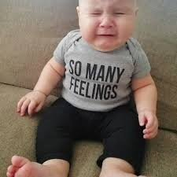

--Rupert Spira
"The illusionary "I" grabs the feeling and runs with it."
--Gary Tzu
"Every separate person lives in suffering and that drives them for a solution."
--Tony Parsons
We all know so many folks, maybe even ourselves, who are trying to handle anxiety, anger and depression.
“Handle” being a euphemism for, “Get rid of.”
Because let’s face it, no one likes these feelings. Everyone wants them gone.
Which might be a bit odd.
Because over the millennia, existence has gone out of its way to provide many feelings of sadness, anger, pain and fear (along with other feelings), not just to people but to all living things,
only for humans to reject and try to get rid of them as fast as possible.
Kind of like the family cat bringing home a dead mouse and proudly laying it at our feet, only for us to scream, “Eeewwww NO!” right in its generous little face.
No, we’d much rather focus on getting more of what we fondly call, “our true nature” –joy, love, compassion and bliss.
Because to us, anything else may be nature but it ain’t true.
And yet, despite years attempting to control what we feel- the medications, therapies, inquiries, meditations, and enlightenment-seekings-
“bad feelings” still somehow remain.
Hmm. Maybe we’ve been missing something in the handling of this problem.
Maybe rather than striving endlessly to make feelings behave as we want,
we might notice for a moment just how very very important they seem to be.
Humans are obsessed with how we feel.
Feelings drive our whole life. Good feeling- good life. Bad feeling- problem, bad life, must fix, control and make it what we want.
Not to mention the compulsion to find meaning in every sensation, every heaviness, every tightness.
Feelings mean how we’re doing and what is in store for us and whether we’re healthy or broken.
Meaning about us.
MEaning.
In sensation.
“Oh no, a contraction! This means I am broken, doomed, a waste of life. I am afraid. This is who I am.”
We are defined. Feelings tell us who we are.
Feeling is where the self coalesces.
It can't be ignored. Because it is required in order for the sense of self to pretend to be something.
Hence, the obsession.
Even though sensations have no ability to contain meaning about the past, or mental health, or whether we’ve done something wrong.
Tightness or heaviness can't mean something about a Me that doesn’t exist.
Could it be sensations are an impersonal happening having nothing to do with us?
If so, then instead of labeling and obsessing about vanquishing them,
maybe we could just leave them alone.
Because maybe they’re just not so all-fired important.
Now to be clear, the Tickler is not saying don’t feel, or bypass, or distract.
It's just that perhaps we could leave feelings alone to do what they do, considering the possibility that they have nothing to do with the self.
This all-encompassing obsession may be a not-necessary trick of mind.
Trying on this possibility might bring some considerable surprises.
Because without piling importance onto random sensations, a person might find themselves
High. Blissed out. Joyful.
From experiencing the exact same fears, sadnesses, angers we've been trying to get rid of.
And of course no one has to believe any of this.
Still, this is not new. Mystics, monks and tribal cultures have always known that leaving feeling alone to do its thing,
without making a self out of it,
brings something quite different,
and paradoxically may transform those very same hated feelings,
and even that very same supposed self,
into exhilarating, amazing and even fun experiences.
Completely without us.
Which brings a lightness that feels
Not uncomfortable at all.
And in fact may even feel
pretty darn good.
Watch Judy on Buddha at the Gas Pump
"Suddenly you’re ripped into being alive. And life is pain, and life is suffering, and life is horror, but my god you’re alive and it’s spectacular.”
--Joseph Campbell
“The purpose of emotions is to let a streaming beauty flow through you.”
—Rumi
"Let everything happen to you. Beauty and terror. Just keep going. No feeling is final."--Rainer Maria Rilke
